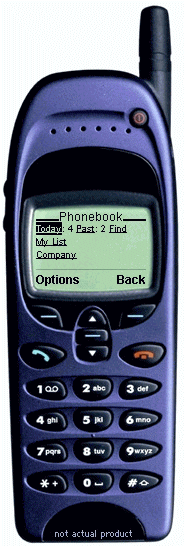

NotWired.com is a complete mobile portal solution built for mobile professionals. Access to NotWired.com software is available through your mobile device and Internet browser.

To take the interactive tour, click on the hyperlinks on the mobile phone.
| Phonebook | Today's calls, past due calls
and phonelists are available at your fingertips. Don't hunt through your PDA for that
phone number. Have it all right at your fingertips. When the call is complete, you can
mark it complete, assign a call to someone else, or set a followup date. You may also setup
phone lists on the NotWired.com site to quickly access phone numbers and addresses. A
personal and company list is shown in this tour. Find and options to return to the main index are available. |